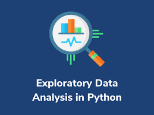

In this section, data analysis were made using the microsoft SQL server.

Tableau is one of the visualization softwares as it helps in data visualization and make better dicisions. This holds all of my Tableau Projects.

Python as a programming language is wiedly used for various purposes, data analysis inclusive. This section shows all data Analysis using Python programming language. Visualization libraries such as seaborn and matplotlib were mainly used.

Excel is used in data domain as for Data filtering, Goal seek analysis, data organization and many more. In this section, it hold most of my excel works, pivot table in excel inclusive.